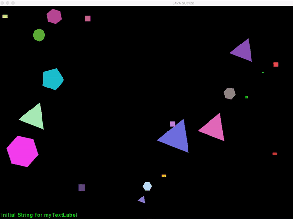

The System Class:
In the previous project, the System class had a vector of Particles. You will need to change this so that we now have a vector of pointers to dynamic Particles.
This means we need the Big Three functions for the System class.
Various Shape Classes:
You will design minimum of four shape classes (Circle, Triangle, Square, Rectangle) who will be descendants of the Particle class.
These classes will rely on Particle to provide support for their position, velocity, color, mass and radius (width of the bounding rectangle) and they will provide other variables such as rotation speed, movement characteristics, and other behaviour.
Particle Class:
The particle class will probably never be instantiated on its own but will live on through its descendants. It will have virtual functions that will allow the child classes take control of their functions. These virtual functions include: Move and Draw.
Extra
Extra billion points for interesting / creative shape behaviours which will also be included in the project specifications for the future genertions with your name attached to it.